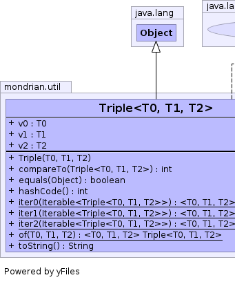
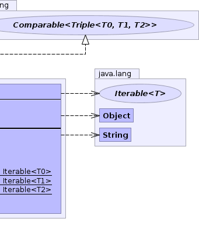

public class Triple<T0,T1,T2> extends Object implements Comparable<Triple<T0,T1,T2>>
Because a triple implements equals(Object), hashCode()
and compareTo(mondrian.util.Triple), it can be used in any kind of
Collection.
|  |  |
| Constructor and Description |
|---|
Triple(T0 v0,
T1 v1,
T2 v2)
Creates a Triple.
|
| Modifier and Type | Method and Description |
|---|---|
int |
compareTo(Triple<T0,T1,T2> that) |
boolean |
equals(Object obj) |
int |
hashCode() |
static <T0,T1,T2> Iterable<T0> |
iter0(Iterable<Triple<T0,T1,T2>> iterable)
Returns an iterable over the slice #0 of an iterable.
|
static <T0,T1,T2> Iterable<T1> |
iter1(Iterable<Triple<T0,T1,T2>> iterable)
Returns an iterable over the slice #1 of an iterable.
|
static <T0,T1,T2> Iterable<T2> |
iter2(Iterable<Triple<T0,T1,T2>> iterable)
Returns an iterable over the slice #2 of an iterable.
|
static <T0,T1,T2> Triple<T0,T1,T2> |
of(T0 v0,
T1 v1,
T2 v2)
Creates a Triple.
|
String |
toString() |
public static <T0,T1,T2> Triple<T0,T1,T2> of(T0 v0, T1 v1, T2 v2)
v0 - Value #0v1 - Value #1v2 - Value #2public static <T0,T1,T2> Iterable<T0> iter0(Iterable<Triple<T0,T1,T2>> iterable)
T0 - Type #0T1 - Type #1T2 - Type #2iterable - Iterable over triplespublic static <T0,T1,T2> Iterable<T1> iter1(Iterable<Triple<T0,T1,T2>> iterable)
T0 - Type #0T1 - Type #1T2 - Type #2iterable - Iterable over triples